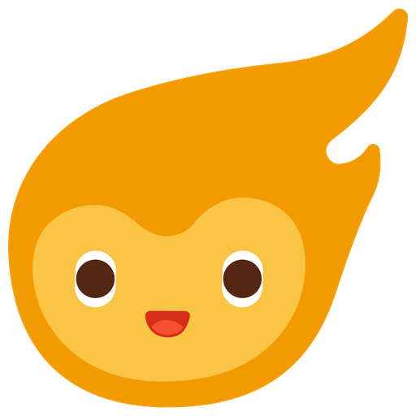

Lucky Maco
A little Macoji slot machine. Pull the lever, shake your phone, or hit space.
How it plays
Three reels, all 28 Macoji live on every pull. Land three identical for the jackpot, two for twins, and anything else gives you a reading of your day — so no pull is ever wasted.
| Outcome | Odds |
|---|---|
| 3 identical — jackpot | 5% |
| 2 identical — twins | 10% |
| No match | 85% |
Those odds are fixed no matter how many Macoji exist. The machine picks the pattern first, then fills it with faces — so growing the icon set from 28 to 280 never changes how often you win. 60% of pairs land with the odd one on reel 3, which is why that reel crawls to a stop.
Luck
The bar across the foot of the machine is a multiplier on those odds — five levels, ×1 to ×5. It scales jackpot and twins together, so the ratio between them never changes and neither ever gets rarer as your luck goes up.
| Luck | Jackpot | Twins | No match |
|---|---|---|---|
| ×1 | 5% | 10% | 85% |
| ×2 | 10% | 20% | 70% |
| ×3 | 15% | 30% | 55% |
| ×4 | 20% | 40% | 40% |
| ×5 | 25% | 50% | 25% |
You earn it. Three pulls with no match and Maco hands you a level, and a share lifts you off the floor — the Share button says so while it is worth something. A win costs you one level, so luck is something you build, cash a little of in, and build back. A player cannot pass ×4; the top of the bar belongs to Game Changer.
Put it on your page
One line. It adds a floating Maco button in the corner that expands the game. No dependencies, no network calls, nothing stored.
<script src="https://mcailab.github.io/lucky-maco/luckymaco.js" defer></script>Settings
All optional — every one falls back to its default.
| Attribute | Default | What it does |
|---|---|---|
data-triple | 0.05 | Odds of 3 identical (jackpot) |
data-twins | 0.10 | Odds of exactly 2 identical, any position |
data-near-miss | 0.60 | Share of twins with the odd one on reel 3, so reel 3 crawls. Presentation only — pays the same either way. |
data-mode | widget | widget = floating button, page = always open |
data-theme | auto | auto / light / dark |
data-position | bottom-right | Or bottom-left |
data-shake | true | Shake-to-pull on mobile |
data-shake-force | 26 | Sensitivity, 8–60. Lower is twitchier |
data-set | — | Restrict the pool, e.g. fire,joy,wink,grin |
<script src="luckymaco.js"
data-triple="0.10"
data-pair="0.25"
data-position="bottom-left"
defer></script>You can also set window.LuckyMacoConfig before the script, or call
LuckyMaco.configure({...}) at runtime. The game renders in a shadow root,
so its styles and your page's can't touch each other.
Notes
Shake needs HTTPS — it's a secure-context API, so it won't fire over plain
http://. On iOS the first tap on Maco asks for motion permission; if it's
declined, the lever still works.